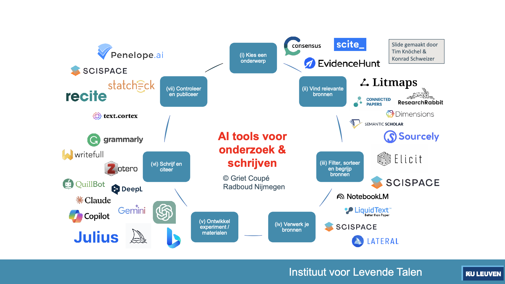

I remember the first time I saw someone using ChatGPT in the wild. I was taking the train from Oxford to London in the beginning of 2023. A student flipped open their laptop and wrote a prompt. And presto, an output appeared. The student copied it into a word document and did some light retouches, and was done with it. It made me feel kinda uneasy but I didn’t think much more of it — I had a musical in London to get to (It was Wicked and it was amazing).
In what follows I just want to record some experiences and thoughts surrounding AI that I’ve been wrestling with. I hope you find it interesting, but lest you don’t make it to the end: I’m not entirely against it, but it’s also not the miracle machine that Big Tech hype purports it to be. Use with caution and don’t just drink the koolAId willy nilly.
The AI con
It’s probably best I begin with a book that just came out: Emily Bender and Alex Hanna’s The AI Con: How to Fight Big Tech’s Hype and Create the Future We Want. The book, which I worked through in audiobook format, was ironically narrated by a human with the most robotic voice I have ever heard. Or maybe it was a robot, a deepfake; it’s hard to tell these days. Still, this is an important book and the authors’ stance is very clear: don’t believe the hype and don’t outsource human creative potential to a machine.
Now I think most of us have played with filters, in spite of the obvious privacy concerns and stuff like that. If the product is free, you probably are the product. And if you want to get more fun filters for your picture, you can pay to remain the product. It is in a way inevitable that asking people to prove they’re not robots by filling out captchas and identifying traffic lights in the end becomes monetized because of this late stage capitalism we find ourselves in.
The tech bros love making alluring promises of all the benefits we will be able to reap if we just put up with the sowing of AI seeds and the cultivation of the tools. A vision of the computer or Data in Star Trek - synthetic life that acts as any human would do or at least can completely understand and think independently (within well-defined and convenient borders like Asimov’s laws for rotobics). Or a while back (2016) Elon Musk promised neuralink chips that will lead us eventually to the singularity. It’s all smoke and mirrors, and not the good kind. And it’s also a global phenomenon, as these flags clearly illustrate (the provenance of this picture is discussed below).
But look at these pictures
Image generators like Dall-E and midjourney took the internet by storm. I think most of my friends played around with it, because it was such a novelty. You just write a prompt, get a few options (#PrincipleOfOptionality), choose one or tell it to go again, or how to adapt, and after some tries you hopefully land on something.
It wasn’t long before the complaints of artists and writers came that massive amounts of their work had been used to train these models. And if you don’t know any artists personally, it’s probably a far from your bed story that doesn’t concern you. But you probably should be, because if you’re on the internet, you’re probably also in it. Anyway, it’s not right that people’s work is stolen just like that. I hate that places where people could sell handcraft artisanal thingamajigs like Etsy are now overrun with generic and bland stuff. Part of this is also the Temus and AliExpresses of the world. I get that price is huge selling point (pun intended), but have you tried to be less consumerist?
In a number of online spaces I find myself in (e.g. OBOD, a fun patreon-linked discord), reactions to AI were first varied but increasingly unison. The novelty of being able to generate “art” wore off real quick with the aforementioned realization of massive nonconsensual scraping of people’s data. And still there were these guys, mesmerized by the hype, who kept defending it. All I could see was an influx of witchy books (favorite genre <3) that would be ghostwritten, if we can even assumer there is a ghost in the shell or homunculus at work within AI (probably not). This had all the astrological portents to be the fake witch books controversy of 2020 but on steroids. In the aforelinkedto discord server, other peeps clutched their pearls too, and I think soon an unspoken rule against AI generated stuff was put in place. Make no mistake though, we love memes and the sharing that is involved; they just need to be made by humans. (As I’m writing this a doom vision of AI generated memes suddenly pops up. Like what would even be the point.)

And I get it, recently we had the Ghibli filter fad, which is of course fun but completely antithetical to many of the exact themes treated in Ghibli movies. Perhaps it’s time we call upon Princess Mononoke to attack the AI servers with her pack of white wolves. Or take the less-enduring starter pack trend — in any case I saw less of this one — which sparked a small backlash with some #StarterPackNoAI resistance. The point is, the novelty of these ideas is really fun: what would this image look like in a Ghibli style? What would be a TVH starter pack? That’s a really creative human question. But the novelty wears off so fast, especially when you know the answers to these questions are generated by ripping off real artists’ work. There is a reason why we respect people that have honed their craft over time and have become masters at it. Take this beautifully drawing by Leen Sevens for example.
In the university
Time to turn to my workplace. There was about a half year window (early 2023) in which ChatGPT usage was novel and an influx of presentations included a quirky little section of “I asked ChatGPT what term X means” or something like that, and it still felt novel and edgy, the sort of feeling you may want to convey in a talk. But then, at least among my peers, that novelty wore off and it became kind of cringy.
For example, one presentation (June 2024) aimed at sharing best student supervision practices was rife with “so I asked ChatGPT, how do you …”, slide after slide. Not only did it make for a poor presentation structure, it just undermined the credibility of the speaker. Like what was even the point of inviting this person to share best practices if it was just gonna be synthetic text answers? Where was the expertise??
In KU Leuven’s latest issue of Sonar, pp. 8-13 the medical promises and potential of AI are briefly covered. And it’s not hard to imagine the idea of “putting big medical datasets into the computer and generalizing over them to arrive at more accurate diagnoses” as a benefit of AI. Certainly rings true, if indeed accurate. It is a vision of the future that Star Trek also prophesies. Yet, there is a small catch here. The technique that is being used for this is most likely based on neural networks, which strictly speaking is a subbranch of the catch-all term artificial intelligence.
In any case, the benefits of using this specialised usage of neural networks is evident, but I disagree the label it’s being served under. At the same time, don’t forget about the AI rat actually published (but now retracted) in Frontiers in Cell and Developmental Biology, see also coverage here.
Erm, how did Figure 1 get past a peer reviewer?! https://t.co/pAkRmfuVed H/T @aero_anna pic.twitter.com/iXpZ1FvM1G
— Dr Charlotte Houldcroft (@DrCJ_Houldcroft) February 15, 2024
By hopping on the AI train (with which I mean using “AI” as the main term, because it is in vogue) we risk losing the specificity of techniques, and the actual advancement of popular dissemination of scientific progress. ( waves hand vaguely while muttering “it’s all AI anyway” )
In the same issue of Sonar, I do like the current rector Luc Sels’s (the chancellor) admonition (p. 3) that we should really work on opening the black box that is AI (again, neural networks). The newly rector-elect Severine Vermeire also ran on increased literacy with regard to “(generative) AI”. I certainly hope the literacy starts with teaching students and colleagues to see through the hype and instead keep on developing the expertise necessary to judge these systems and outputs for what they’re worth. Let’s hope the Leuven.AI institute takes this issue seriously.
Yet I can’t get rid of this gnawing feeling in my chest. I am worried that the role of the expert will be confined to the affirmation or rejection of generated, synthetic artificial “intelligence” output. Experts of the future will have been exposed to increasingly larger proportions of AI generated slob, under the guise of training them to deal with it, risking throwing out the baby along with the bathwater. That is, training time is limited, and choices in the curriculum must be made. Let’s hope it’s the right ones.
At the same time, the literacy required to evaluate generative AI output (which, I want to reiterate, is not the same as the neural network medical case mentioned above; it’s just confusingly and erroneously all sold under the same name) is still lacking on all levels.
Let’s start with students. The stories of student papers that reek of GenAI synthetic text are too numerous to even link to one. From early-on lexical indicators (see here for a list, an issue which may be “solved” in more recent models, to leaving in sentences like “as a language model, I cannot …”, it’s all looking pretty grim. As far as I know, there are no reliable detectors for generative AI. But maybe that doesn’t matter. When a literary colleague of mine asked me if I knew any, I just replied: regardless of the process, if the outcome reads like a lot of bla bla and not a lot of boom boom (I hope this works in English, blabla and boemboem certainly works in Dutch), the thing is written badly and will receive a similar evaluation.
Why is that? An easy answer is that ChatGPT not so much hallucinates — this is perhaps the wrong term that has been applied to it — as much as it sells bullshit. There’s even an article “ChatGPT is bullshit”, published in Ethics and Information Techology (2024) which makes this exact point.
Alas, many people also lack a bullshit detector, no matter if the bullshit being presented is served on a written or spoken platter. And I get it, it’s part of our pragmatics that sometimes we just want to give face or get to a different issue, so we don’t critically engage with what’s being said. But if there’s one situation in which we must be cautious and critical, it’s when we are dealing with matters of the academy: it’s part of our moral code, e.g. the ALLEA code of conduct, which I just found out also has a vision on generative AI. After all, professionally, we should embody the advancement of society with factual expertise in our respective specialized domains. It’s why we consider plagiarism as a literal crime. Uncritical usage of generative AI comes pretty close to doing a plagiarismke.
And so it brings me no joy to report on the following issue, but I cannot help but mention it. Recently, we had rectorial elections at my institution. One of the candidates (notably the current vice-rector of internationalization) had this presentation on his faculty visit that was filled to the brim with AI generated images. We’re talking guys with six fingers, girls with anatomically impossible hand configurations, and flags of countries that don’t exist level here. This sparked immediate intense conversation with colleagues, not only because part of that candidate’s slogan was “commitment to people”. Maybe start with your own powerpoint, a very low bar to pass, because the cringe was real. In any case, I find it unacceptable that a vicerector of internationalization runs for rector using AI generated pictures featuring a.o. flags of countries that don’t exist.
I know this has been a long section, but I also want to quickly mention that I’ve left the whole green footprint out of the equation, but it’s certainly something that cannot be left out of the complete discussion. Thus far it seems that using, let’s say ChatGPT, is individually and per prompt not that taxing on the environment. But of course, it’s never a single prompt and a single individual. At scale, we probably should be wary if not worried. Let alone estimating the taxing burdens placed on the environment by not only training a single big ChatGPT model, but in fact training and retraining and overtraining multiple models until the next one is made “public”.
Research and writing
Is there then no use for generative AI?
This month, in the interest of writing this post and hoping to find some solutions to problems I was facing in my research, I decided to pay a month for ChatGPT. Note that this is because I didn’t feel entirely comfortable denouncing a technology without at least trying to evaluate what it can mean to me. I try to take the same approach to movies and books etc. and I kinda hate it when people have an opinion without having done the work of engagement with something, although I do recognize the value of hearsay.
One issue I struggled with was a pernicious python coding problem. Long time followers of this blog will know that I live in Rstudio. However, sometimes the big snake calls. I am not the best at writing python, mostly because I don’t do it often enough, but I can read (read: evaluate) it. So there was a python package that I found that could help me. And iterative reasoning with ChatGPT did help me figure out how to write the python code for my issue, and it did save a huge amount of time this time. At the same time, I didn’t hone my python skills here by visiting Stackoverflow until I somehow DIY’ed an ugly but bespoke working solution that can be used in the future. And that last part is exactly how you advance in programming languages like R and python — you try to add more stuff to your toolbox. While my problem was solved, no new instrument was added to that toolbox. (Oh gods, please don’t see ChatGPT as the only toolbox you’ll ever need.)
In another case study, a colleague of mine were talking about ChatGPT’s “deep research” feature. He engineered a prompt and I did one too, both on topics we are expert enough at. Basically, a collection of google searches woven into a synthetic text, produced in about 15 minutes, was spat out. The time it took was impressive. But the quality was rather shallow. Let’s just say that ChatGPT did not provide “PhD level research” as sometimes is claimed. The other alternative is that “PhD level” means something different for OpenAI than it does for us.
So I find it a difficult question. Obviously, using Gen AI as a search tool is playing a dangerous game but it can be a quick fix.
Indeed, when it first came out, a mate of mine said it was like “talking to a god” — in my experience that’s not how the gods communicate — but sure Jan 🙄🙄. My mom has recently discovered ChatGPT and uses it for personal tarot readings. While I find that pretty funny, she understands that behind it is just a number generating machine that randomly (I guess that is its oracular power ??) gives sequences of words that fit well together (you get the implicit biases for free).
Where I do see some benefit, or at least not fewer issues than competitors, is in checking grammar. I find it hard to see the difference between using ChatGPT as a glorified spellcheck or Grammarly (which also now touts use of AI as does every app in existence fol). Playing around with “make this text 10% less academic” was a nice 30 mins but I also noticed that some nuances in the original text just went missing. Yet maybe for learning purposes there is a place for Gen AI (if only to show the deficiency in the models), although again, the fear is that lack of AI literacy (or let’s face it, plagiarism literacy in general) does not lead to this takeaway…
Recently, we had two Gen AI writing workshops, presented by the team of the ILT institute, who have amazing expertise in teaching writing. The first one focused on charting the landscape of AI tools I was struck by just how many tools there are out there. Basically, we can outsource everything if we want: (i) subject selection, (ii) source identification, (iii) source evaluation, (iv) source handling, (v) development of experiments and materials, (vi) write and cite, (vii) check and publish.

Suddenly, I envisioned a future of AI tools reading papers, writing them, and the role of the researcher being confined to spending the hour it takes to upload materials to Editorial Manager, although that is probably also streamlinable in the future. Is this what triggered the Butlerian Jihad in the Dune series?
But then one of the presenters made a comment that shook me to its core because I hadn’t heard it before: “In this day and age of Gen AI, how dare students even present a text that hadn’t been ‘optimized’ by integrating AI feedback?!”. It’s been a few months, and I still don’t know how I feel about it. Of course, I want students (and colleagues too) to deliver the best texts they can, but I struggled to interpret what they meant with AI feedback.
In the second session that question was answered. The ILT team currently espouses a model called PAIRR (Sperber et al. 2025), involving the following steps in the student writing process: (i) draft, (ii) peer feedback, (iii) AI feedback, (iv) reflect, (v) revise. I guess theoretically his works out, as it stresses the iterative editing process that good writing requires. Practically, the worry that AI will do all steps in one go is definitely there. I get that the goal is to keep some control over the writing process and not to outsource everything, and also that using AI as a feedback tool (again, what is the difference between a ChatGPT giving feedback or a Grammarly doing the same) makes sense but maybe Pandora’s box can’t be closed anymore?
Where is the wabi sabi?!
I know this blog has been a meandering collection of thoughts and it’s totally fine if you left long before getting here. It’s a condensed reflection about (generative) AI and how it has invaded (probably the best term) my life. Every week there is a new doom story (I’m just linking here to Mark Dingemanse’s reporting on unsavory AI experiences with Oxford University Press or the increase of AI text on science blogs; sigh.). I can only reiterate: USE AI WITH CAUTION.
Final story time before the somewhat hopeful envoi. Recently, I found myself on LinkedIn (don’t know why), scrolling a bit absentmindedly through some updates of people. Before long I found this longish post by an acquaintance, talking about AI integration in the company and whatever. And then it suddenly hit me, I was reading generated text. I felt sick to the stomach. How dare this person inflict this upon me? It’s one thing when I go to ChatGPT to solve my problem, but it’s another if you post the output on a social medium without a single disclaimer.
The writing was bland and just a bit too clean. In processing this event, I finally worked through it by contemplating what I like about human text. And it’s actually simple. It’s the wabi sabi 侘び寂び of real texts. To put it bluntly, real texts are always a bit imperfect, because everybody speaks with their own voice. I love it when I can translate Dutch phrases literally into English or Chinese and still get their meaning across. Or when there’s little nuances that you can pick up by reading between the lines. Similarly, I want to read real imperfect scholarly works (theses, dissertations, articles) that at least hint at unique voices, not generic boilerplate outputs.
So let that be the final message for now, because clearly we can take a stance but that doesn’t make the problem of Big AI hype magically go away (believe me, I tried). Don’t just drink the koolAId but retain some of that wabi sabi, it’ll make your writing more palatable.